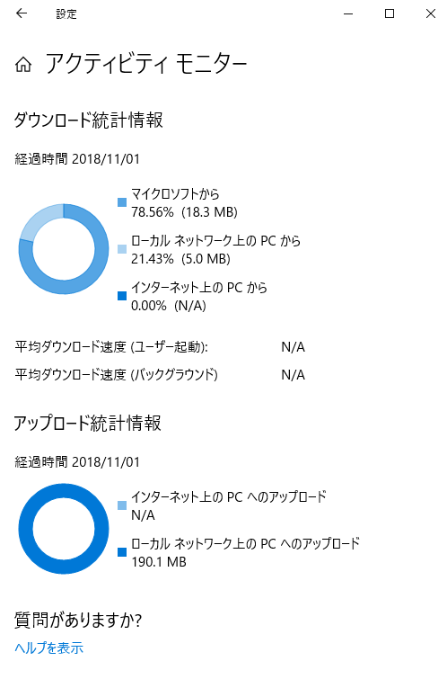
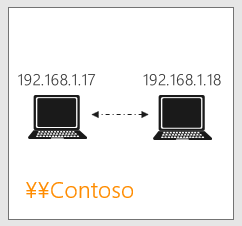
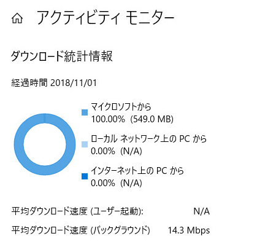
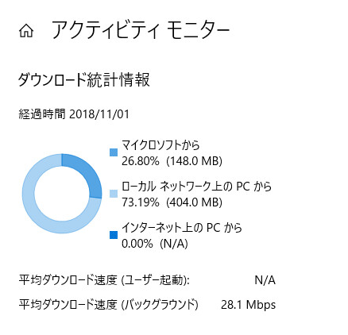

※本記事はマイクロソフト社員によって公開されております。
※この記事は過去に作成され、公開された記事を再編したものです。
みなさま、こんにちは。WSUS サポート チームです。
今回は「概要篇」、「グループポリシー篇」に引き続き第 3 回は「効果測定篇」として、実際に配信の最適化でどの程度ピアからファイルを取得出来ているか、確認を行う手順について紹介をしていきます。
Windows 10 もバージョン アップが重ねられ、配信の最適化の機能も効果を確認することが出来る、以下の「アクティビティ モニター」の機能がバージョン 1709 から追加されています。
[スタート] ボタン > [設定] > [更新とセキュリティ] > [詳細オプション] > [配信の最適化] > [アクティビティ モニター]

上記のアクティビティ モニターを利用することで、配信の最適化の効果もかなり簡単に確認が出来るようになったため、その手順について今回の記事では紹介していきます。
検証環境の構成および設定
今回の検証では、以下のシンプルな構成でバージョン 1803 のクライアントを 2 台用意し検証を行います。
実際の検証を行う場合には、本番環境に可能な限り近い構成で検証していただくことをオススメします。特にクライアントの台数は多いほど効果が得られ易いので、可能であれば多くのクライアント (例えば 10 台以上) を用意して検証をしてください。

また、今回は配信の最適化の機能について、効果を得られやすくするために、以下グループ ポリシーの設定を行います。これらのグループ ポリシーはいずれも「グループポリシー篇」で紹介しておりますので、詳細についてはそちらの記事をご参照ください。
- ダウンロード モード : “グループ (2)”
- グループ ID : 共通したグループ ID
- 最小ピア キャッシュ コンテンツ ファイル サイズ (MB) : 1 MB
- 最大キャッシュ時間 (秒) : 0 秒 (無制限)
- http からのバックグラウンド ダウンロードを延期 (秒) : 3600 秒
- http からのフォアグラウンド ダウンロードを延期 (秒) : 60 秒
検証手順
それでは実際の検証手順について紹介をしていきます。
事前準備
検証のために新しく OS をインストールした場合には、特に問題とはならないのですが、以前より環境を利用していた場合には、アクティビティ モニターのカウンターが一部カウント アップされてしまっていることがあります。
この場合には、各端末で以下のコマンドを管理者権限で実行し、Delivery Optimization サービスを一度停止した後に値を保持しているレジストリ キーを削除することで、カウンター値を全てクリアします。
1 | net stop dosvc |
1 台目のクライアントでの Windows Update の実施
1 台目のクライアントで Windows Update を実施し、配信の最適化のキャッシュが保存されるようにします。
このブログ の手順等に沿って、Windows Update を実行し、更新プログラムのダウンロードを完了させます。
※ 特にインストールまでしていただく必要はありません。Powershell で以下のコマンドを実行し、”Status” が “Caching“ となっており、キャッシュの準備が完了しているものが存在するか確認を行います。
<< 実行コマンド >>
1 | Get-DeliveryOptimizationStatus |
<< 実行例 (キャッシュの準備が完了出来ている場合) >>
1 | Get-DeliveryOptimizationStatus |
※ 注意 : キャッシュの準備が 1 つも出来ていない場合には、Delivery Optimization のクラウド サービスへ接続出来ていない可能があります。このブログで紹介しているポート要件が満たされているか、また こちら や こちら のブログで紹介している通り、プロキシの設定が正しく行われているか改めて確認してください。
- 念のため、アクティビティ モニターを立ち上げて状況を確認します。1 台目のクライアントのために、通常は以下のように、ほとんどキャッシュからは取れていません。

2 台目以降のクライアントでの Windows Update の実行
続けて 2 台目以降のクライアントで、Windows Update を実行し、実際にキャッシュからどの程度情報を取ってこれるか確認を行います。
- 2 台目以降のクライアントでも Windows Update を実行します。ただし、今回は “http からのバックグラウンド ダウンロードを延期 (秒)“ の設定によって、キャッシュが利用される確率を上げるため、以下のコマンドを実行してバックグラウンドでダウンロード処理を開始させます。
1 | usoclient StartScan |
- Powershell で以下のコマンドを実行し、状況を確認します。”BytesFromPeers” がカウント アップされていれば、クライアント間での通信が行われているものと考えられます。
<< 実行コマンド >>
1 | Get-DeliveryOptimizationStatus |
<< 実行例 (キャッシュからファイルのダウンロードが行われている場合) >>
1 | Get-DeliveryOptimizationStatus |
※ 注意 : キャッシュよりダウンロードが行われない場合には、公開情報に記載の通りこちらやこちらの点をご確認ください。
- ダウンロードが完了したら、アクティビティ モニターを立ち上げ、キャシュからどの程度ファイルが取って来れたかを確認します。今回の検証では、かなりキャッシュから取って来易いよう設定したため、73.19 % をキャッシュから取ってこれていることが確認出来ます。
※ “http からのバックグラウンド ダウンロードを延期 (秒)“ を利用している場合には、ダウンロードが完了するまでに長時間を要する可能性があるご留意ください。

なお、以下の Powershell コマンドで同じ内容を出力することも可能なため、複数のクライアントで統計情報を収集する際にはお役立てください。
<< 実行コマンド >>
1 | Get-DeliveryOptimizationPerfSnapThisMonth |
<< 実行例 >>
1 | Get-DeliveryOptimizationPerfSnapThisMonth |
さてこれで配信の最適化に関する一連のシリーズは以上です。リリースされた当初は動きが分かりづらかったり、コントロールしにくい点が多かったかと思いますが、バージョンアップの度に機能が改善されていますので、今後の導入検討の参考となれば幸いです！
(免責事項)
本情報の内容 ( 添付文書、リンク先などを含む ) は、作成日時点でのものであり、予告なく変更される場合があります。